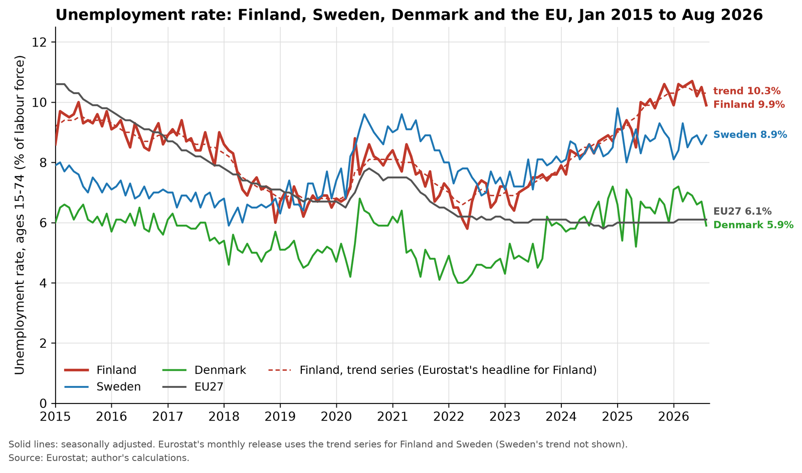
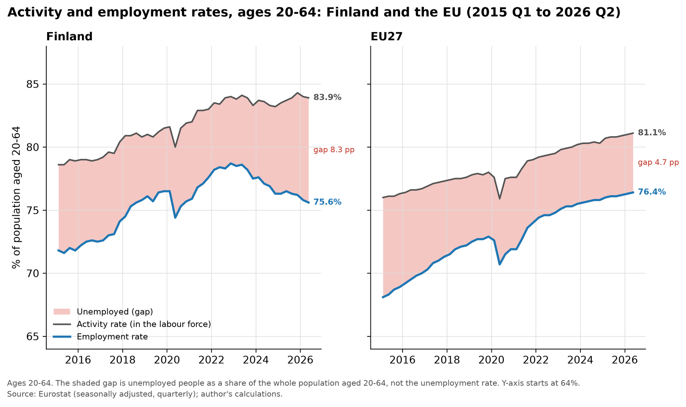
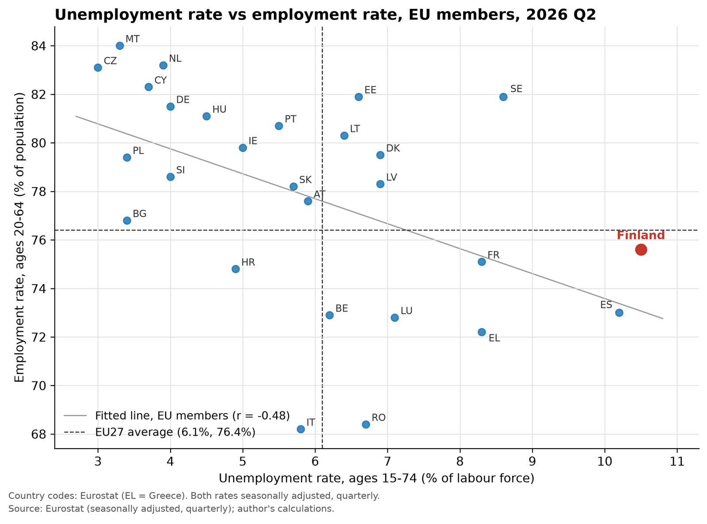

Finland tops the EU jobless table. Is it as bad as it looks?
Finland now has the highest unemployment rate in the European Union. In Eurostat's release of 1 October 2026, Finland's rate for August 2026 was 10.3% (ages 15–74, trend series), against 6.1% for the EU as a whole (seasonally adjusted).
Then comes the twist: on jobs, Finland is not at the bottom, since its employment rate was 75.6% in the second quarter of 2026, just below the EU's 76.4% and 19th of 27 (ages 20–64, seasonally adjusted, Eurostat). Statistics Finland's own monthly figure for August 2026 is 75.9% (ages 20–64, trend). That is a different source, period and adjustment, not a contradiction. Both the unemployment and the employment figures are true at once.
What made me look at this was curiosity: I wanted to study how unemployment compares between native Finns and immigrants into the country. I come to that comparison below, but first the headline number needs a closer look.
Same survey, two trend lines: 10.1% or 10.3%?
Readers in Finland may have seen 10.1% instead. Both figures come from one source, Statistics Finland's Labour Force Survey, and on the seasonally adjusted series the two agencies agree: 9.9% in August 2026 (ages 15–74). They differ only on the trend, which also strips out random month-to-month noise: 10.3% from Eurostat (1 October release) and 10.1% from Statistics Finland (22 September release). Eurostat publishes both series for Finland but headlines the trend. On the seasonally adjusted basis, Finland's August 2026 rate (9.9%) is just below Spain's (10.0%), so Finland tops the table because Eurostat uses the trend for Finland.
Statistics Finland's documentation says the two agencies' trend figures "differ from one another due to different methods", without saying which. It also warns that the latest trend months are partly based on forecasts and get revised. Eurostat revised Finland's July 2026 rate down by 0.2 percentage points in its latest release. Since 2021 the two trend series have been up to 0.3 points apart in a month. Neither agency explains this August gap, so I don't pick a cause.
How Finland climbed to the top of the jobless table
Under the International Labour Organization definition that Eurostat uses, a person is unemployed if they are without work, have looked for work in the past four weeks and can start within two weeks. The unemployment rate divides that number by the labour force aged 15–74: people in work plus people looking for it.
Finland's rate has risen fast. On Eurostat's trend series it was 1.3 percentage points higher in August 2026 than in January 2025, and 0.4 points higher than a year earlier. It peaked at 10.5% in March and April 2026, the highest since my series began in January 2015, before easing to 10.3% in August. The low in that period was 6.6%, in April 2022 (all figures ages 15–74, trend). In August 2026 Sweden was third in the EU at 8.7% (trend), while Denmark was at 5.9% (seasonally adjusted).

Few vacancies, more job-seekers: Finland's 2025, and a Denmark that barely moved
Most of that climb happened in 2025. In Statistics Finland's annual figures, the unemployment rate rose by 1.3 percentage points to 9.7%, and the number of unemployed grew by 39,000 to 278,000, while the number of employed fell by 12,000 (ages 15–74; Statistics Finland, 27 January 2026). The labour force, the employed plus the unemployed, grew by 27,000 at the same time. So two things were going on: fewer people in work, and more people looking for it.
The official explanations point to the same two forces.
The first is weak demand for labour. In its interim forecast of 1 October 2025, the Bank of Finland wrote that high unemployment "is explained in particular by the weak demand for labour", with fewer than 35,000 job vacancies in July 2025, the lowest in nearly ten years; it also reported that the number of people employed had declined in the first half of 2025. The OECD's Economic Survey of Finland (23 May 2025) said the rise in unemployment reflected "declining employment in the public and construction sectors", and that job vacancies had fallen in 2023–24 as the economy turned down.
The second is a larger labour force. In a Bank of Finland Bulletin article of 30 June 2025, the Bank's economists found that in 2023–2024 more people entered the labour force from outside it than left, and that in weak conditions many of them, graduating students among them, became unemployed rather than employed. They judged this a more significant factor in the rise than people losing jobs, and traced the higher participation to later retirement, more active young people and immigration. The Ministry of Finance went further in its winter Economic Survey (18 December 2025): the sharp rise over the past year "is no longer due to the employment rate dropping, but has been caused by growth of the labour force", which it attributed to immigration and the Government's employment measures.
Figure 2 shows both forces in the Eurostat data for 20–64-year-olds. Between the fourth quarters of 2024 and 2025, Finland's activity rate rose from 83.2% to 84.3%, while its employment rate stayed almost flat, at 76.3% and then 76.2% (seasonally adjusted). More people came into the labour market, and the jobs did not grow with them.

The sources do not weigh these causes the same way. The Ministry of Finance puts labour-force growth first and says that by late 2025 a falling employment rate was no longer the driver. The OECD puts job losses in construction and the public sector first. The Bank of Finland names both: weak demand as the main explanation for high unemployment, and people entering the labour force straight into unemployment as a bigger part of the rise than people losing their jobs. Statistics Finland's annual data show that employment did fall over 2025 as a whole: the employment rate for ages 20–64 dropped by 0.7 points to 76.0% (27 January 2026). Part of the difference is timing, as the sources were written at different points in the year. I don't think the published evidence lets me pick one.
Denmark's 2025 was clearly different. Its annual unemployment rate was 6.4%, up 0.2 points from 6.2% in 2024, while Finland's rose by 1.3 points, from 8.4% to 9.7% (ages 15–74, Eurostat). The gap between the two countries widened from 2.2 to 3.3 percentage points in one year. Denmark's monthly seasonally adjusted rate is noisy: during 2025 it moved between 5.2% (May) and 7.1% (March), sometimes by more than 1.5 points from one month to the next, so single months say little. Eurostat's trend series smooths this out. Denmark's trend rate went from 6.6% in December 2024 to 6.8% in December 2025; Finland's went from 8.9% to 10.3% (ages 15–74). Statistics Denmark's register-based measure points the same way: net registered unemployment was 2.5% of the labour force from January to August 2025 and 2.6% from September to December (seasonally adjusted, Statistics Denmark StatBank). That is a different concept from the survey rate, so its level is not comparable with the Eurostat figures, but its direction is. In Figure 1, Denmark's line stays within its usual range through 2025 while Finland's climbs.
Born abroad, out of work: Finland's gap is more than twice the EU's
Since immigration is one of the forces behind Finland's growing labour force, and since this is what first made me look at the data, I wanted to see how unemployment differs between people born in Finland and people who moved here, and how that compares with the EU as a whole.
Eurostat publishes the comparison in two ways: by country of birth and by citizenship. I use country of birth as the main measure, because people who move to Finland and later take Finnish citizenship stay in the "foreign-born" group. All figures below are annual, for ages 15–74, from Eurostat's Labour Force Survey data (both tables last updated 10 September 2026).
In 2025, the unemployment rate of people born in Finland was 8.4%. For people born abroad it was 18.5%, a gap of 10.1 percentage points. Across the EU, the rates were 5.3% for natives and 9.7% for the foreign-born, a gap of 4.4 points. So in Finland the foreign-born rate was about 2.2 times the native rate, against about 1.8 times in the EU.
The gap has also widened fast. In 2022, the rates in Finland were 6.2% for natives and 11.3% for the foreign-born. By 2025, the native rate was up 2.2 points and the foreign-born rate up 7.2 points. In the EU over the same years, both rates edged down: from 5.5% to 5.3% for natives and from 10.1% to 9.7% for the foreign-born. I start in 2022 because Eurostat flags a break in the series in 2021.
Where people were born matters too. In Finland in 2025, the rate was 13.8% for people born in another EU country and 20.2% for people born outside the EU. The EU-wide figures were 6.6% and 10.7%.
The citizenship figures tell the same story, with slightly higher rates for the foreign group: 8.8% for Finnish nationals and 20.0% for foreign citizens in Finland, against 5.5% and 10.7% in the EU (2025, ages 15–74).
Statistics Finland's own breakdown uses a third definition, "foreign background", which is based on where a person's parents were born. On that basis, the 2025 unemployment rate was 8.3% for people with a Finnish background and 19.6% for people with a foreign background, up from 6.2% and 12.1% in 2022 (ages 15–74, Statistics Finland, updated 1 July 2026). The same table shows where the growth in the labour force came from. Between 2024 and 2025, the labour force with a foreign background grew from 316,000 to 348,000, while the labour force with a Finnish background went from 2,524,000 to 2,520,000. Unemployed people with a foreign background rose from 55,000 to 68,000, and with a Finnish background from 183,000 to 209,000.
Table 1. Unemployment rates by country of birth and by citizenship, Finland and the EU27, 2022 and 2025
| Group (ages 15–74) | Finland 2022 (%) | Finland 2025 (%) | EU27 2022 (%) | EU27 2025 (%) |
|---|---|---|---|---|
| Native-born | 6.2 | 8.4 | 5.5 | 5.3 |
| Foreign-born | 11.3 | 18.5 | 10.1 | 9.7 |
| – born in another EU country | 8.9 | 13.8 | 6.8 | 6.6 |
| – born outside the EU | 12.4 | 20.2 | 11.5 | 10.7 |
| Nationals (by citizenship) | 6.4 | 8.8 | 5.7 | 5.5 |
| Foreign citizens | 12.0 | 20.0 | 11.0 | 10.7 |
Unemployment rate, % of the labour force, annual. Source: Eurostat, accessed 12 October 2026; author's calculations.
Two cautions. The foreign-born are a much smaller group in the survey than the native-born, so their rate is less precise from year to year. And none of these sources says why the gap in Finland widened so much more than in the EU, so I don't offer a cause here.
Nineteenth for jobs, first for joblessness
The employment rate divides the number of people in work by the whole population aged 20–64, so job seekers and people outside the labour force, such as students who are not looking for work, are both in the denominator.
On this measure Finland's 75.6% is just below the EU's 76.4% and 19th of 27, in the lower half (2026 Q2, seasonally adjusted, Eurostat). Not a strong result, but not what you would expect from the country with the highest unemployment rate.
Figure 3 shows this. Across the 27 member states, higher unemployment tends to go with lower employment: the correlation is −0.48 (2026 Q2, quarterly unemployment rate for ages 15–74 against employment rate for ages 20–64, both seasonally adjusted). Finland sits 2.5 percentage points above the fitted line. Its employment rate is higher than its jobless ranking would predict, not high in absolute terms.

High participation, and students who count as job-seekers
Two things connect the two numbers.
The first is participation. Finland's activity rate, the share of 20–64-year-olds who are either working or looking for work, was 83.9% in 2026 Q2, against 81.1% for the EU (seasonally adjusted, Eurostat). More people in the labour force means more people who can be counted as unemployed.
The second is students. In Finland's Labour Force Survey, students who look for work and can start within two weeks count as unemployed (Statistics Finland). In 2025, 68% of unemployed 15–24-year-olds in Finland were in education or training, against 42% across the EU (annual, Eurostat, author's calculations; "education or training" includes non-formal training). Statistics Finland's own data show 80% of non-employed 15–24-year-olds, a wider group, in education (2025).
The denominator matters most for young people. The youth unemployment rate is a share of young people in the labour force, not of all young people; Eurostat itself warns that it "should not be interpreted as the share of jobless people in the overall youth population". In 2025, unemployed young people in Finland were 21.8% of the labour force aged 15–24, but 11.7% of everyone aged 15–24 (annual, Eurostat, author's calculations).
This is common across the Nordics. In 2025, 81% of unemployed 15–24-year-olds in Sweden and 74% in Denmark were in education or training. Among employed young people, the share in education was 64% in Finland, 60% in Sweden and 69% in Denmark, against 51% in the EU (ages 15–24, annual, Eurostat, author's calculations).
Table 2. Unemployment, employment, activity and students: Finland, Sweden, Denmark and the EU27
| Area | Unemployment rate, Aug 2026 (%) | Employment rate 20–64, 2026 Q2 (%) | Activity rate 20–64, 2026 Q2 (%) | Youth unemployment rate, under 25, Aug 2026 (%) | Unemployed 15–24 in education or training, 2025 (% of unemployed) |
|---|---|---|---|---|---|
| Finland | 10.3 | 75.6 | 83.9 | 23.3 | 68 |
| Sweden | 8.7 | 81.9 | 88.1 | 23.8 | 81 |
| Denmark | 5.9 | 79.5 | 84.8 | 15.0 | 74 |
| EU27 | 6.1 | 76.4 | 81.1 | 15.4 | 42 |
Unemployment rates: ages 15–74; trend series for Finland and Sweden, seasonally adjusted for Denmark and the EU, as in Eurostat's monthly release (the same applies to the youth rates). Employment and activity rates: seasonally adjusted. Last column: annual, includes non-formal training. Source: Eurostat; author's calculations.
Finland's numbers are very high. Still, I think a significant part of them, though not necessarily the biggest part, is explained by how many of the unemployed are students, given that, as already mentioned, 68% of the unemployed 15–24-year-olds in Finland were in education or training, against 42% across the EU.
Read the two rates together: the rise is still real
None of this makes the headline wrong. It means the unemployment rate should be read together with the employment and activity rates: Finland's is high partly because so many Finns are in the labour force to begin with.
It does not mean unemployment is harmless. Young people who were unemployed and not in education made up 3.7% of all 15–24-year-olds in Finland in 2025, against 3.6% in the EU (annual, Eurostat). And the rise is real: on Eurostat's trend series, Finland's rate is up 1.3 percentage points since January 2025 (ages 15–74).
So the next time you see the headline, remember this: unemployment rates in Finland are real, but there is the case of students, which should also be considered when discussing the Finnish numbers.
Survey margins, revisions and two age bands
The Labour Force Survey is a sample survey. Statistics Finland's August 2026 count of 262,000 unemployed (ages 15–74, not seasonally adjusted) has a margin of error of ±23,000. The latest months also got revised, and Eurostat revised Finland's July 2026 rate down by 0.2 percentage points in its 1 October release. For Finland, Eurostat publishes both the trend and the seasonally adjusted series and headlines the trend.
The age bands differ, such that we have 15–74 for unemployment, 20–64 for employment and activity. So do the periods: August 2026 for the unemployment headline, 2026 Q2 for Eurostat's employment rate and ranking, 2025 for the student figures. Statistics Finland's 75.9% (August 2026, trend) and Eurostat's 75.6% (2026 Q2, seasonally adjusted) are different series.
The data were downloaded on 7 October 2026 from the public APIs of Eurostat and Statistics Finland (Labour Force Survey), and the headline figures were checked against Eurostat's 1 October release. I processed the data in Python. Code to reproduce this analysis: github.com/eokinyo/finland-unemployment-paradox
The question these numbers leave open
These figures can tell us who is out of work. They cannot tell us what that means for the people involved, or for the countries they move to. So I'll end with a question I can't answer from the data, and that reaches beyond Finland and the EU: if a country is open to people who come to work, and many of them then cannot find work, is that openness worth it for the people who come? And is it worth it for the economy and the public finances of the country that receives them? I would like to hear how you weigh it.
Sources
- Eurostat, "Euro area unemployment at 6.4%", Euro indicators news release, 1 October 2026.
- Eurostat, "Unemployment by sex and age – monthly data", reference metadata, last updated 8 January 2026.
- Statistics Finland, "More employed persons in August 2026 compared to one year ago", Labour Force Survey, 22 September 2026.
- Statistics Finland, "Labour force survey: documentation of statistics" (undated).
- Statistics Finland, "Comparison between the employment statistics of Statistics Finland and the Ministry of Economic Affairs and Employment" (PDF, undated; file created April 2022).
- Eurostat datasets, accessed 7 October 2026: Unemployment by sex and age – monthly data; Unemployment by sex and age – quarterly data; Employment and labour force by sex and age – quarterly data; Population by citizenship and labour status; Young people neither in employment nor in education and training by labour status; Participation of young people in education and training by labour status.
- Statistics Finland, Labour Force Survey tables, accessed 7 October 2026: Key indicators of the Labour Force Survey and their seasonally adjusted series and trends, monthly; Young people in education and the labour market, annual.
- Statistics Finland, "Unemployment grew in 2025", Labour Force Survey, 27 January 2026.
- Bank of Finland, "Finland's economy on a faltering return to growth" (interim forecast), Bank of Finland Bulletin, 1 October 2025.
- Juvonen, P. and Peltonen, J., "Labour market flows run deeper: Participation has raised both employment and unemployment", Bank of Finland Bulletin, 30 June 2025.
- Ministry of Finance, "Recovery of Finnish economy delayed", press release on the Economic Survey, Winter 2025, 18 December 2025.
- OECD, OECD Economic Surveys: Finland 2025, chapter 1, "Firming up growth and consolidating public finances", 23 May 2025.
- Eurostat datasets, accessed 12 October 2026: Unemployment by sex and age – annual data (last updated 10 September 2026); Unemployment by sex and age – monthly data, Denmark and Finland, seasonally adjusted and trend (last updated 8 October 2026).
- Statistics Denmark, StatBank, "Unemployed persons (seasonally adjusted), net unemployment in percent of the labour force", accessed 12 October 2026 (table updated 30 September 2026).
- Eurostat, "Unemployment rates by sex, age and country of birth", annual (last updated 10 September 2026), accessed 12 October 2026.
- Eurostat, "Unemployment rates by sex, age and citizenship", annual (last updated 10 September 2026), accessed 12 October 2026.
- Statistics Finland, Labour Force Survey, "Population aged 15–74 by labour force status, sex and origin, annual data, 2015–2025" (updated 1 July 2026), accessed 12 October 2026.